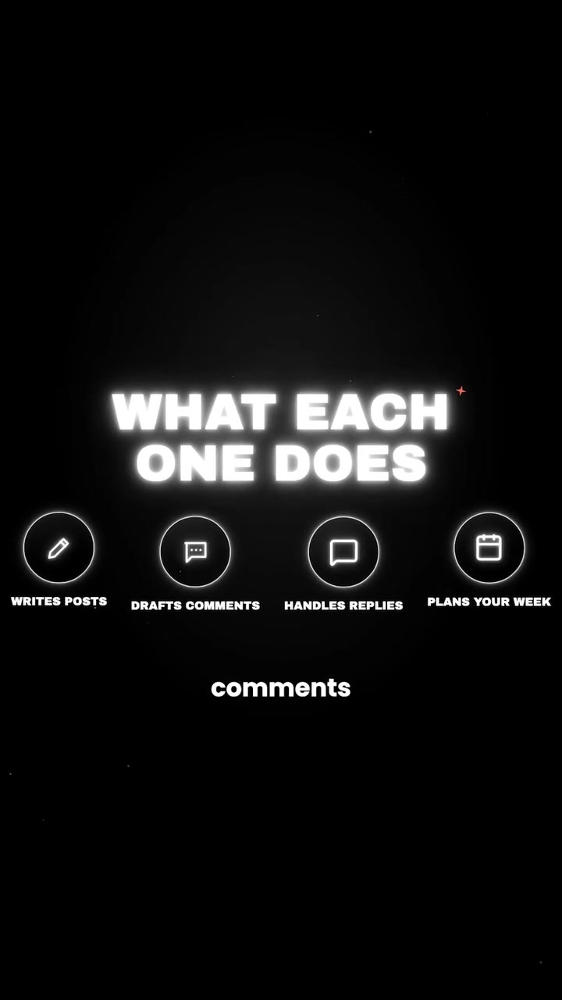

AI · Claude-Skills
The 11 Modular Claude Skills Suite for Autonomous LinkedIn Content & Audience Operations
Most AI-generated LinkedIn content is immediately recognizable as "slop": generic emojis, robotic sentence structures, and predictable platitudes. Ben Kimball breaks down a modular suite of 11 specialized Claude Skills that decouple LinkedIn operations into atomic tasks: voice calibration, hook engineering, comment engagement, inbound DM qualification, weekly editorial pacing, and algorithm performance auditing.
Visual Reference Stills

The 11 Modular LinkedIn Skills Architecture
Voice Print Calibrator
Ingests 20 of your top-performing historic posts to extract cadence, sentence length, vocabulary constraints, and ban AI cliché words.
Hook Architect
Generates 5 distinct psychological openers per concept (Counter-intuitive statement, Hard metric lesson, Story pivot, Framework teaser).
Carousel Post Builder
Structures PDF slide-by-slide decks with clean visual hierarchy (1 concept per slide, large headline, supporting diagram prompt).
Thought Partner Commenter
Drafts substantive 2–3 sentence value-add comments on industry peer posts to build organic relationship capital without self-promotion.
Inbound Reply Concierge
Categorizes comments under your posts into Questions, Praise, Skepticism, and Leads, drafting tailored contextual replies.
Weekly Editorial Planner
Balances your weekly content matrix across 3 pillars: Authority/Tactical Guides (50%), Case Studies/Wins (30%), and Vulnerable Stories (20%).
DM Qualification Engine
Analyzes inbound messages from potential clients, qualifying budget and intent before proposing a calendar link.
Article & Newsletter Expander
Takes high-traction short-form posts and expands them into long-form LinkedIn Pulse articles and Substack essays.
Hashtag & Tagging Optimizer
Selects 3 targeted niche tags and evaluates whether tagging companies enhances or suppresses algorithmic distribution.
Analytics Post-Mortem
Reviews weekly impressions, engagement rate, profile visits, and follower conversion to score topic traction.
Human-in-the-Loop Auditor
Never auto-publishes. Stalls execution at final review gates so human creators approve, edit, or reject before publishing.